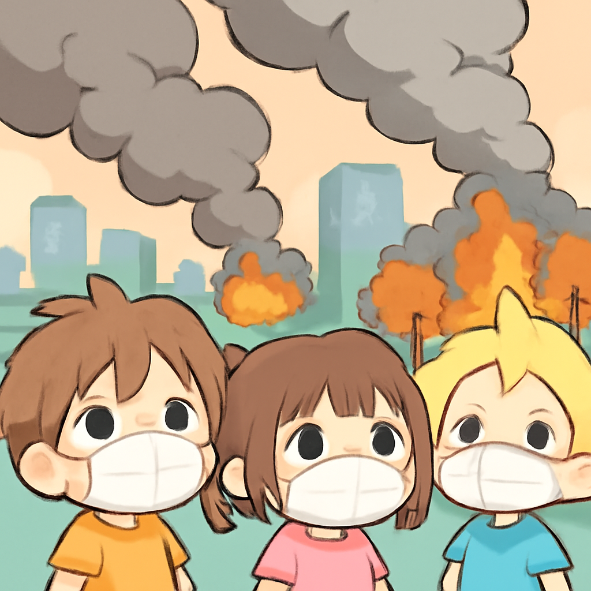

其一 · 約旦 · 伊朗攻擊致美軍兩死一失蹤
美軍在約旦遭伊朗攻擊，兩名士兵喪生。
在約旦，兩名美國士兵在伊朗的攻擊中喪生，這是自四月停火以來首度出現美軍死亡事件。隨後，美軍開始對伊朗的報復性打擊，局勢再度緊張。這不僅影響到美伊關係，也可能引發更大範圍的地區衝突，真是讓人心頭一緊。
🔗 原始新聞 ↗
2026-07-19 · 以古觀今，以笑抗愁
美軍在約旦遭伊朗攻擊，兩名士兵喪生。
在約旦，兩名美國士兵在伊朗的攻擊中喪生，這是自四月停火以來首度出現美軍死亡事件。隨後，美軍開始對伊朗的報復性打擊，局勢再度緊張。這不僅影響到美伊關係，也可能引發更大範圍的地區衝突，真是讓人心頭一緊。
🔗 原始新聞 ↗
烏克蘭士兵因國防部長被罷免展開抗議。
在烏克蘭，隨著國防部長費多羅夫的撤職，士兵們開始表達不滿，甚至爆發抗議活動。他們認為此舉損害了軍隊士氣，這在戰爭期間可不是小事。希望領導層能聽見他們的聲音，否則士兵們可不會靜靜地坐下來。
🔗 原始新聞 ↗
烏克蘭空襲俄羅斯網購倉庫，造成重大損失。
近來，烏克蘭的無人機對俄羅斯的Wildberries倉庫展開攻擊，這些倉庫據說是重要的物流中心。這意味著烏克蘭不僅是在前線打擊敵人，還在經濟上發動攻擊，真是讓人驚訝他們的創意。
🔗 原始新聞 ↗
德國政治人物因代孕爭議驚人辭職。
德國政客斯帕恩因其代孕孩子的醜聞辭職，這引發了不少爭議。曾經支持禁止代孕的他，如今卻成為了這個爭議的主角，讓人不禁想問，這樣的轉變是不是讓人覺得有點滑稽？無論如何，這對他的政治生涯來說都是一個不小的打擊。
🔗 原始新聞 ↗
加拿大野火持續影響美國城市空氣品質。

在加拿大安大略省，近200場野火仍在燃燒，煙霧飄散至美國城市，造成空氣品質惡化。這場野火不僅影響了當地居民，還對兩國的環境政策提出了挑戰。希望大家能在這場煙霧中保持清醒，記得佩戴口罩哦！
🔗 原始新聞 ↗